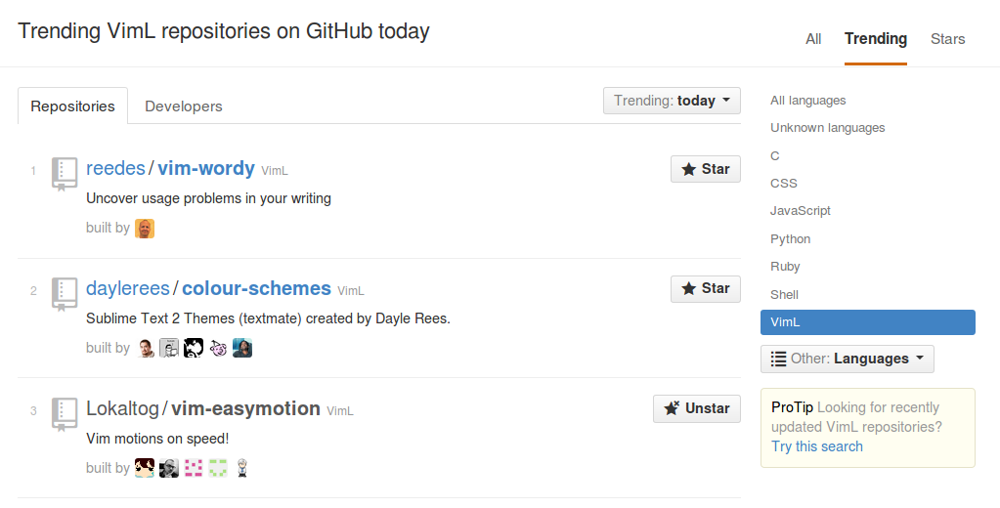
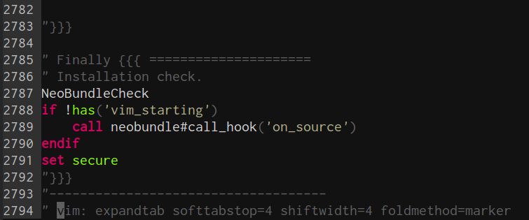

この記事は Vim Advent Calendar 2013 78日目の記事になります。私事ですが本日2014/02/16日、Vimmerとして1歳の誕生日(Vim歴換算)を迎えましたので個人的な話題を含むVACの記事を書かせていただきます。そういうものが嫌いな方はブラウザバック推奨です。
この記事によってVimの魅力が少しでも伝われば幸いです
vimtutorを終えた一年前のツイート(ツイートの文面が恥ずかしい…)
Vim歴1年、めでたいです。
『Vim駆動学習』
なぜ『Vim駆動学習』かというと、僕のプログラミング歴自体がVim歴+半年あるかないか程度なので、僕のプログラミング力の大部分は『Vim駆動』で学習し、向上してきたといっても過言ではないからです。Vim駆動バンザイ。
(最近はVim駆動でVim自体を学んでいる割合が高すぎるのでそろそろVim以外の進捗もだしていこうと反省はしています…)
『Vim駆動学習』をおすすめしたい
Vim駆動学習によってGitHub で Stars over 1000 のリポジトリをメインで開発できるようになった
- vim-easymotionというカーソル移動系のVimプラグインです。
- Repository: https://github.com/Lokaltog/vim-easymotion
めでたいです。
Trend入りもしました:)

1からスターover 1000のリポジトリを作り上げたわけでは勿論なく、プログラミング力というより単なる活動量のゴリ押しと些細なアイデアによって、開発が止まっていたプロジェクトを乗っ取った(collaboratorになって開発しませんかと提案された)というのが現実です。 ですので、実は数字に見合うほどのことはできていないですが、これだけユーザー数が多いプラグインを扱えるというのはｸﾞｻｸﾞｻくるissuesがちょっぴりつらいものの、今までに無い経験でとても楽しく、『Vim駆動学習』としてVim プラグインを扱うならではのものだったと思います。 Vimを好きにならなかったらこんな経験はいまの時点の僕にはおそらくできていませんでした。
また海外のユーザーの方もよく使ってくれている、むしろもともと日本人より海外勢のユーザーが多いプラグインなので無い英語力を引っ張りだして無理やり使ういい機会にもなったりもします。
Vimのコミュニティが面白い
GitHubでスターover 1000のリポジトリがどうだと言ったことよりも、Vimのコミュニティがおもしろいというところは特筆したいです。スター1000のリポジトリなんていっても、その99%は他のVimmerの人たちの助けを借りて、質問に答えてもらったり、アドバイスやアイデアをもらうことによる賜物でした。本当にみなさんには感謝しています。
vim-jpやLingrのVim部屋、Twitterなどで数々のVimmerが活動しており、
パッチ職人の方たちが数々のパッチをvim_devに送って本体に取り込まれたり、
Vim Advent Calendar 2012がなぜか365日通して続いたり、
vimrc読書会やVimプラグイン読書会を毎週/毎月オンラインで開催してわいわいみんなで他人のvimrcやプラグインを読んだり、
LingrのVim部屋では絶えず誰かがVim活していて質問すれば答えてくれるし、
いろんなVimmerがVimを便利にしたり、Vimプラグインを作ったりメンテしたり…
Vimmerたちの活動には見ていて本当に圧巻されます。 Vim自体が好きなのは勿論なのですが、Vimをとりまく多種多様な人たちあってのVimでもあり、僕はその人達も含めてVimが好きです。
他にもたくさん『Vim駆動』で得られるものがある
たとえば、Web上の記事よりも公式ドキュメントを読むという大事さはVimの膨大なhelpを目の当たりにすれば自然と気が付きますし、Vimはテキストを効率的にエディットするもの…Vimはテキストを効率的にエディットするものですから、テキスト編集、プログラミングなどにおいて、Vimを極めればそれ以前と比べて数百倍の生産性(妄想)を得ることができます。決してVim scriptにハマってしまって逆に生産性が低下するなんてことはありません!!!
そして個人的にはプログラミングが楽しいとVimによってより強く思えるようになりました。Vim駆動最高です。
vimrcの記録
ここで1年間のvimrcの軌跡をちょっと振り返ってみます
Vimの戦闘力は単純にvimrcの行数が多ければいいというわけではありませんが１つの指標としては面白いです
一応コメントや空行を無視して正味の行数を測ってくれるScouterの情報も載せます。
一年前のvimrc
- Date: 2013/02/16
- Lines:0
厳密にはとある方が公開されていたシンプルな100行未満のvimrcを最初に使用していました。プラグインなし、基本オプション設定のみのものだった気がします。
git & GitHub 使い始めのvimrc
- Date: 2013/07/16
- Source: https://github.com/haya14busa/dotfiles/blob/2f3395fb468892764f69e4126e24c11b78a9cad3/.vimrc
- Lines:205
- Scouter:156
大体半年後ですがあんまり増えてないですね。gitの情報として残っている公式記録としては最古のvimrcです。
現在のvimrc
- Date: 2014/02/16
- Source: https://github.com/haya14busa/dotfiles/tree/97a79c8331c5a869730d96ee321219df84becd62
- Lines: 2794
- Scouter: 1296

1年間で約3000行になりました!!!
1年間、どうやってvimrcを成長させたか
はじめはコピーやプラグインを使ってもいいかも
はじめは右も左もわからないし、ただでさえ慣れていないVimで効率がどうしても劣ってしまうので、最初は基本的なオススメ設定のvimrcをそのままコピーしてある程度便利に使うというのはありかなと思います(決してvim distributionとか呼ばれてるプラグインがいっぱい入ったものを勧めているわけではないです)。
また、素Vimで1から順に学んでいくのもいいですが、それだとキリがないし割と早い段階でプラグインつかってVim便利！と感じるのもVimを挫折しないためにはオススメかなと思います。実際僕はmattn/emmet-vimやLokaltog/vim-easymotionの便利さに感動してVim頑張って使ってたという側面もありました。
注意すべきところは知らないプラグインは入れないということでしょうか。当たり前のように思えますが、NeoBundleを導入したときに紹介されていたプラグインをそのままコピペしてインストールし困るということが僕はありました…というのもプラグインによっては使わなくてもデフォルトの挙動やマッピングを置き換えてしまうお行儀の悪いものがあり、それに気づかず操作方法を間違って憶えてしまうなんてことがあるからです。
vimrc読書会に参加する
毎週土曜日の23時からvimrc読書会という、LingrのVim部屋でオンラインで他の人のvimrcをわいわいみんなで読んで「この設定よさそう」とか「ここの指定のしかたはダメ」だとかをいい合う勉強会があり、これに参加すると格段にvimrc力が上がるのでオススメです。
vimrc読書会は最初はVimmer怖いし、何が書かれているかも、何言ってるかもわからないし、僕は最初はROMっていただけなのですが、それでも参加した時に「hi」、読んでいる間は他の人が言及しているところに絞って読む、終わったら「お疲れ様でした」と言うだけでもきっとVim部屋の方々は喜びますし、最初はそれだけでいいと思います。
勿論基本的なことでも質問すればきっと誰かが答えてくれますし、参加していれば徐々に分かることが増えてきて楽しくなる/vimrc力が上がるのでぜひ参加してみることをオススメします。
他人のvimrcをパクる
vimrc読書会ともかぶるのですが、すでにvimrc読書会で読まれたVim力の高い周りのVimmerのvimrcなどを個別に参考にしたりすると、より手っ取り早くvimrc力が上がると思います。また、プラグインの設定などでは、そのプラグインの作者のvimrcがREADMEやhelpよりも参考になるといった事案もあるのでちょっとそのプラグインの設定部分だけ盗み見るとかするのも面白いかなと思います。
1年間どうやってVimを学んできたか
vimrcとも関連していますね。
helpを読む
参考: Vimのhelpを快適に引こう « haya14busa
Vimのことはたいていhelpに載っているので、下手にWEB上の記事を読むよりもhelpをスラスラと引けるようになったほうが格段にVim力が上がりやすくなります。なるべく速くhelpの引き方は憶えて使いこなせるようになったほうが後々のためです。
実践Vimを読む

実践Vimは本当にオススメです。vimtutorが終わってからすぐ読んでもいいのではないかという話を聞いたことがありますが、本当にそれぐらい初期に読んでも絶対ためになると思います。素のVimについてのいいところを十二分に、体系的に解説してくれている良書です。ドットによるリピートやテキストオブジェクトなどVimの便利な機能をあますことなく解説してくれるし、Vim的な編集の思考法などもこの本によって学ぶことができます。僕は実践VimによってVimへの興味が数段上がりました。
Vim Advent CalendarなどVim記事を読む/書く
学んだらアウトプットするとよいというのはVimに限りませんが。Vim Advent Calendarとして書けば間違っていれば指摘が入るし、一定数の人は読んでくれるので気軽にVACとして書いちゃってもいいとおもいます。
Lingrやvim-jp,TwitterなどなどでVim活する
上述したように、いろんなところでいろんな方達が活動しているので、そこで割と気軽に質問したりアドバイスをもらったりできるのは強みだと思います。特にLingrだと一番気軽に聞けてよいです。
Vimの勉強会などに参加する
僕はVimConf2013に参加しただけで、個人的には勉強会にたくさん参加したというわけではありませんが、東京を中心として地方でもVimに関する勉強会がたまに開催されているので参加すると楽しいと思います。(関西圏で開催されないかなー…ﾁﾗｯ)
Vim プラグイン開発に手を出してみる
Vimが好きになってくるとやはりプラグインを自分で作ってみたいと思うようになるかと思います。そういう時は Vimプラグイン読書会に参加するとよいです。
今のところ月に一回のペースでVimプラグイン読書会が開催されており、誰かのプラグインを読んであれこれ言っています。もともと、Vimプラグインを作ってみたい初心者向けに始まったので、なるべく簡単なプラグインを読むことが多く、作ってみたい！と思ったら気軽に参加して読んでみたりあれこれ質問したりすることをオススメします。
自分でプラグインを開発するというだけでなく、vimrcや使っているプラグインへの理解が進んだりするといったメリットもあるので、プラグインとか難しいとか考えずに参加してみてもよいかなと思います。
まとめ
『Vim駆動学習』最高でした。これからもよろしくおねがいします。